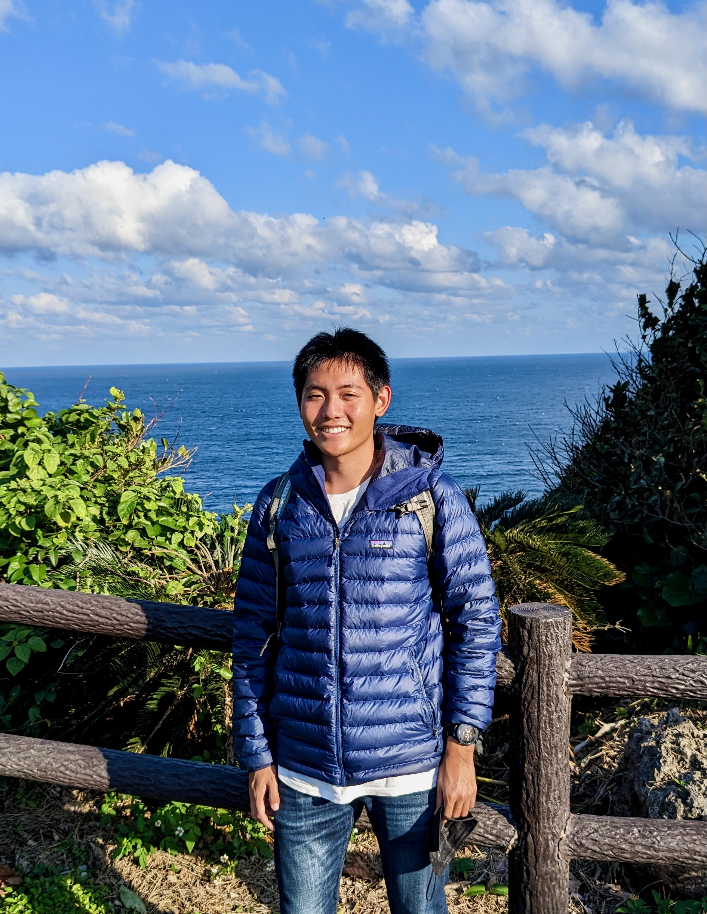

|
William Lin
|
 |
William Lin
Masters student
CS Theory, UC Berkeley
willin@berkeley.edu
|
About me
I received by B.S. in Electrical Engineering and Computer Science with a minor in Mathematics in 2023 from UC Berkeley. I am currently a Masters student in the EECS department at UC Berkeley, and am grateful to be advised in Computer Science Theory by Professor Satish Rao.
My main interests in computer science lie in algorithms and cs theory in general. I am especially interested in approximation algorithms, for their mathematical bounds, and random algorithms, for their clean efficiency. I am drawn to the mathematical side of computer science due to a love of mathematics.
Outside of school I am interested in rock climbing, running, and hiking. I also organize a reading group for literature, and am interested in learning languages, specifically Chinese, Japanese and Korean. Seeking different cultures and experiences fascinate me.
Research
My research interests include
Current Research Project
I am working with Professor Satish Rao on examining graph decomposition as a method for improving fast algorithms. Many recent advances in runtime for problems (e.g. the recent almost-linear time advance for the max-flow problem) rely on graph decomposition as a subroutine as well as having dynamic data structures robust to adversial randomness. We are examining a more efficient method for expander decomposition to improve the runtime of such algorithms.
I am also currently attending the Data Structures and Optimization for Fast Algorithms workshop at the Simons Institute for Fall 2023. I hope to gain more knowledge and experience attending talks and communicating with leading researchers in the field.
Work Experience
Stottler Henke Associates Inc (May 22 - Aug 22)
I was an Artificial Intelligence Developer Intern at Stottler Henke. I was involved in two main projects, one of which was modernizing and simplifying a satelitte scheduling program that essentially approximated solutions to NP-hard problems. This also involved porting it to linux from windows and fixing the issues involved, and improving it so that it could be containerized. I gained much experience with working on large scale projects from this.
I was the main developer on the second project I worked on, which involved designing a framework for drones to communicate their actions when acting in swarms. The framework also allowed for the use of artificial intelligence techniques to improve the behavior of the drone swarms over time.
Teaching Experience
I have been involved in teaching at UC Berkeley for many semesters. My positions and responsibilities are listed below:
Undergraduate Student Instructor for CS70: Discrete Math and Probability Theory (3 semesters)
Reader for CS70: Discrete Math and Probability Theory (2 semesters)
Reader for CS172: Computability and Complexity (1 semester)
Reader for CS176: Algorithms for Computational Biology (1 semester)
A few Selected Projects
Approximation to Dominating Set
Survey paper on Sum of Squares and Approximation Algorithms
Image Generation with Deep Reinforcement Learning
More information on each to come
Coursework
My current coursework is as follows:
CS285: Deep Reinforcement Learning
CS281A: Statistical Learning Theory
CS294-180: Partition Functions: Algorithms and Complexity
Awards
Graduated with High Honors
Eta Kappa Nu member
Regents and Chancellors Scholarship
|